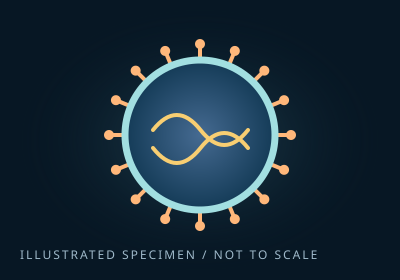
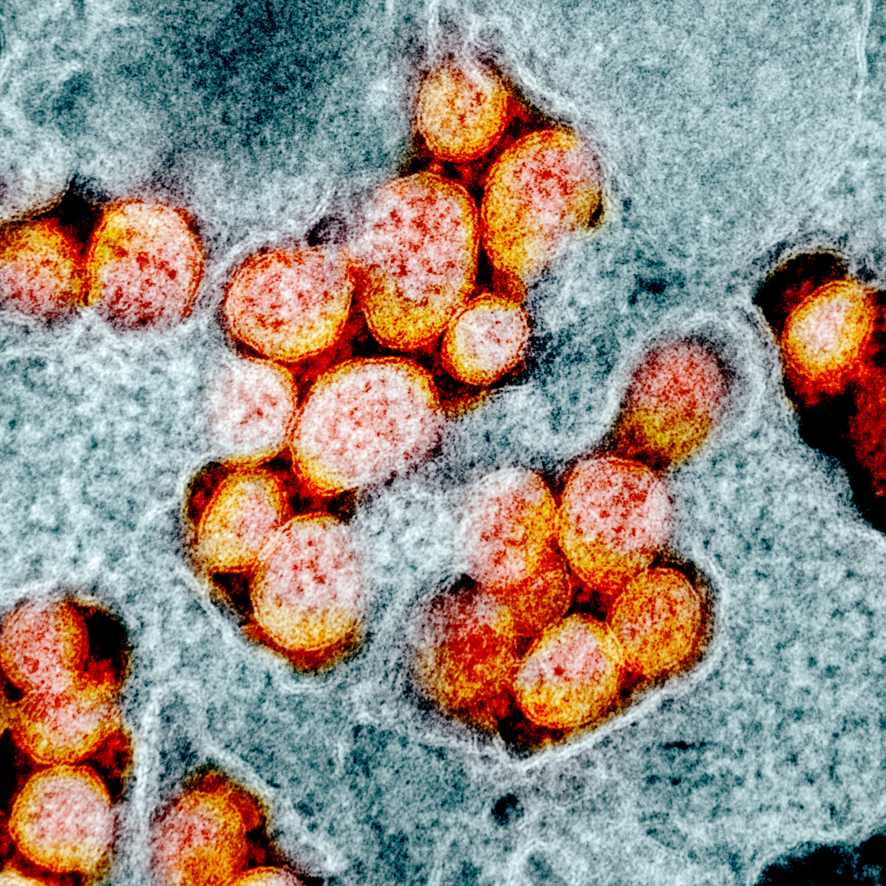
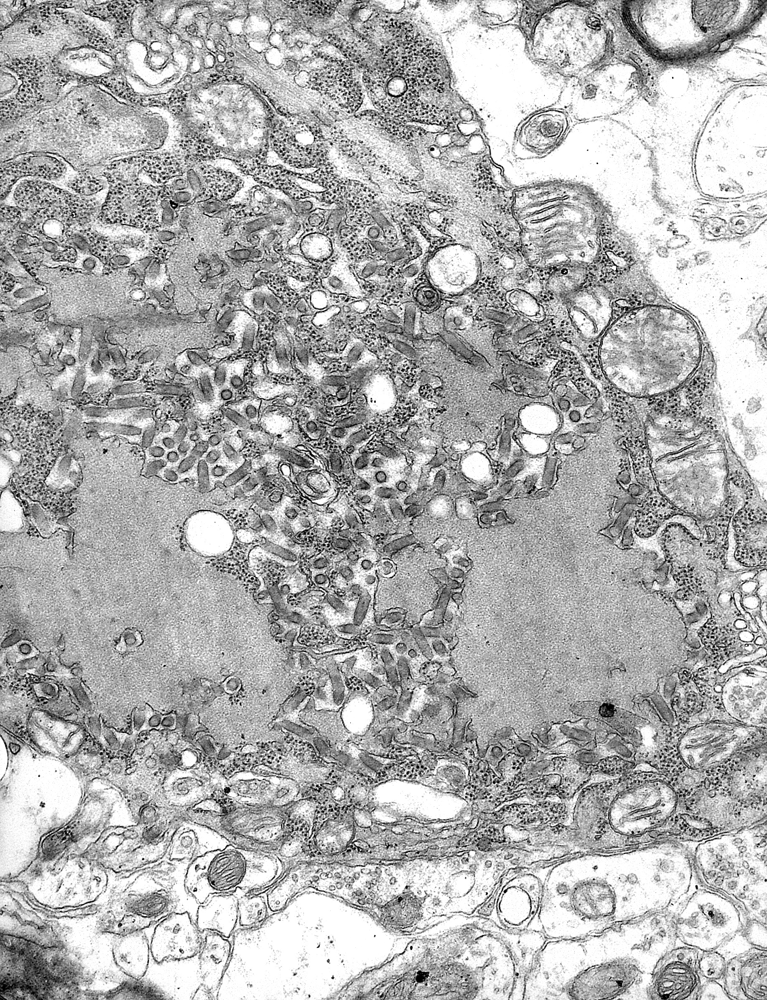
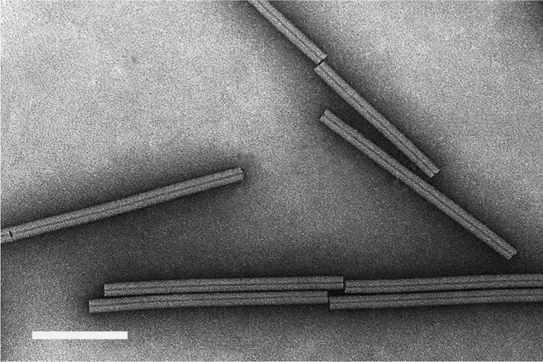
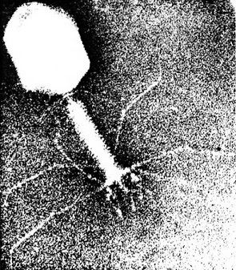

Meet six very different viruses. Each carries genetic instructions, but their shapes, outer coats, and hosts can be surprisingly different.
A virus is not a cell. It is a package of DNA or RNA that needs a living host cell to make more viruses. An individual complete virus particle is called a virion.
Click or tap any card to flip from its illustration to a real electron microscope image. Click again to turn it back. You can also use Tab, then Enter or Space.
01

Enveloped · RNA
Coronavirus
A rounded particle with prominent surface spikes. SARS-CoV-2 is one coronavirus; other coronaviruses can cause common colds.
Look for: the crown-like fringe.

TEM · color added
SARS-CoV-2
Real SARS-CoV-2 particles seen by transmission electron microscopy. The warm-colored particles stand out against surrounding material; the colors were added by NIAID.
NIAID, Integrated Research Facility CC BY 2.0 · Original image, unaltered.
A distinctive bullet-shaped particle contains a coiled RNA–protein complex. The shape is a useful structural clue.
Look for: one rounded end and one flatter end.

Transmission electron microscopy
Rabies virus
Rabies particles within infected tissue. Look for the small elongated, bullet-shaped profiles. The larger structures belong to the cell or its viral inclusions.
CDC / Dr. Fred Murphy · PHIL 1876 Public domain · Original image, unaltered.
This plant virus forms a rigid rod. Repeating proteins wind around its RNA in a helical arrangement.
Look for: the repeating spiral around a rod.

Negative-contrast electron microscopy
Tobacco mosaic virus
Real tobacco mosaic virus particles show long, straight rods. The white scale bar represents 100 nanometers. Dark staining helps make the particles visible.
International Committee on Taxonomy of Viruses CC BY-SA 4.0 · Original image, unaltered.
This virus infects bacteria. Its head stores DNA, while its tail and fibers help deliver that DNA into a bacterial cell.
Look for: a head, tail, and attachment fibers.

Electron microscopy
T4 bacteriophage
A real T4 particle with a large head, a long tail, and fine fibers near its base. This photograph is naturally grainier than the teaching illustration.
7USSR7 · via Wikimedia Commons CC BY 4.0 · Original image, unaltered.
Electron micrographs reveal structures too small for an ordinary light microscope. The SARS-CoV-2 image is color-enhanced; the other images are grayscale. Image preparation and magnification differ, so these photographs are not a shared size comparison. Credits, licenses, and full-size images are on the backs of the cards.
“Type” can mean more than one thing.
Shape, envelope, genome, and host describe different features. An RNA virus can also be enveloped and spherical. These labels overlap; they are not six separate branches of a family tree.
Fronts: original simplified illustrations. Backs: real electron micrographs, reproduced unaltered with individual credits and reuse licenses. Images are not to a common scale. Sources checked October 4, 2026.